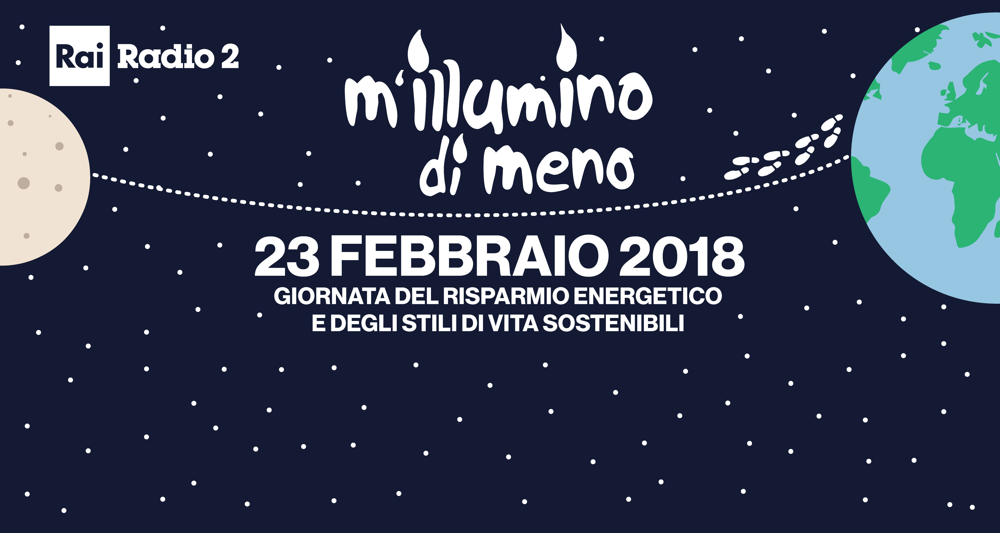
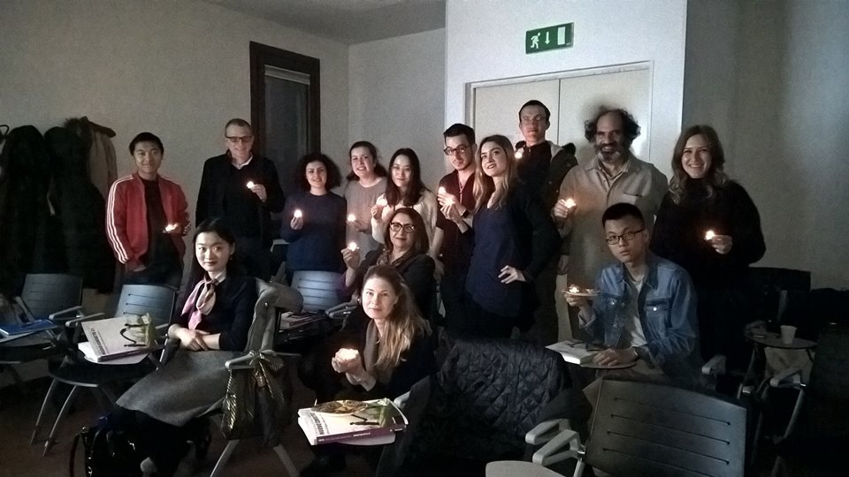
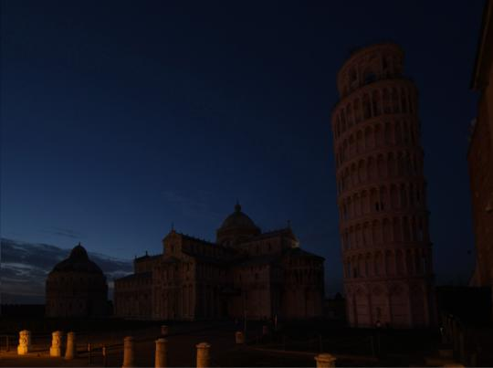

M’illumino di Meno a Venezia
Per la prima volta anche il DVRI con i suoi soci ha aderito alla campagna “M’illumino di Meno”! L’iniziativa nazionale promossa da Caterpillar -Radio2 è sempre più radicata nel contesto veneziano a cui per la prima volta, guidati da Ca’ Foscari Sostenibile, hanno partecipato attivamente anche le istituzioni veneziane e i centri di ricerca del network del DVRI per sostenere comportamenti a favore del risparmio energetico. 
Ca’ Foscari Sostenibile Capofila
Per il decimo anno consecutivo Ca’ Foscari partecipa alla campagna nazionale “M’illumino di meno” per sensibilizzare tutta la comunità sui temi del risparmio energetico e della mobilità sostenibile, coinvolgendo per la prima volta diverse realtà del territorio veneziano tra cui il DVRI e IUAV e rientrando tra le iniziative realizzate a livello di RUS - Rete delle Università per lo Sviluppo Sostenibile. L’edizione di quest’anno è stata incentrata sul tema della mobilità sostenibile, nello specifico sono stati incentivati gli spostamenti a piedi. Con questo proposito nella giornata del 22 febbraio è stata organizzata una camminata a piedi tra le sedi di Ca’ Foscari e quelle dell’università IUAV. Non solo, tante sono state le iniziative proposte: dall’ora e mezza di silenzio energetico - durante la quale sono state spente simbolicamente le luci di tutte le sedi nella giornata di giovedì 22 febbraio e per la quale è stato quantificato il risparmio energetico nelle sedi di Ca’ Foscari centrale e di San Giobbe, al quarto d’ora di silenzio energetico, dalla campagna social a favore dei comportamenti sostenibili alla call per la comunità cafoscarina di proporre idee per l’efficientamento energetico delle sedi universitarie.
La partecipazione delle organizzazioni culturali e di ricerca veneziane

I soci del DVRI hanno partecipato principalmente aderendo alla Campagna Social. Durante la settimana dal 19 al 23 febbraio, è stata realizzata una campagna di comunicazione sui principali social network di Ca’ Foscari Sostenibile ( link Facebook e Twitter) per promuovere comportamenti sostenibili, attraverso consigli pratici da attuare quotidianamente nei propri uffici. Le istituzioni del DVRI hanno diffuso e sostenuto il messaggio di Ca’ Foscari Sostenibile e come nel caso del CNR ISMAR, contribuito raccontando le proprie ricerche in merito. CO.RI.LA si è anche impegnato a spegnere le luci della propria sede. Le organizzazioni convolte sono state: Accademia di Belle Arti di Venezia; Centro Tedesco di Studi Veneziani; CNR ISMAR- Consiglio Nazionale Ricerche; CNR IDPA- Consiglio Nazionale Ricerche, Conservatorio di Musica Benedetto Marcello; CO.RI.LA Consorzio Ricerche Lagunari; Fondazione Bevilaqua La MasaFondazione Querini Stampalia Onlus; Fondazione Ugo e Olga Levi onlus; IRCCS Fondazione Ospedale San Camillo;Università Ca’ Foscari Venezia; Venice Centre for Marine Science and Technologies
M’illlumino di meno compie 14 anni
![TORREDIPISA_MILLUMINODIMENO] 
Dall’inizio di M’illumino di Meno, in 14 anni, il mondo è cambiato. L’efficienza energetica è diventata un tema economico rilevante e le lampadine ad incandescenza che Caterpillar invitava a cambiare con quelle a risparmio energetico, adesso, semplicemente, non esistono più. Un’iniziativa simbolica e concreta - spegnere le luci e testimoniare il proprio interesse al futuro dell’umanità - che è diventata subito molto partecipata: si spengono sempre le piazze italiane, i monumenti - la Torre di Pisa, il Colosseo, l’Arena di Verona -, i palazzi simbolo dell’Italia - Quirinale, Senato e Camera - e tante case dei cittadini.